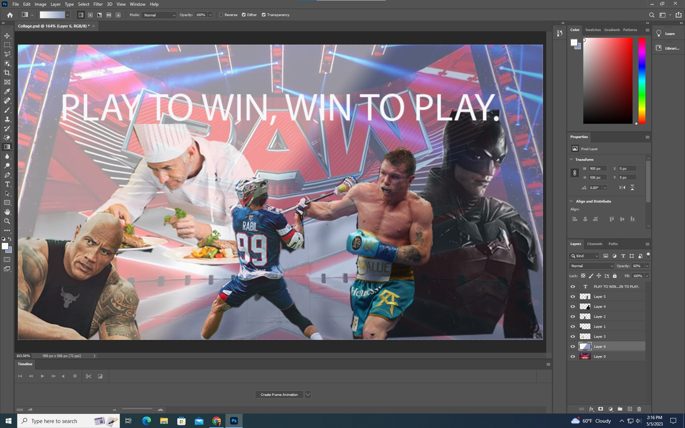

This was the I am collage project. This project was very enjoyable for me because I was able to make a collage that included pictures of some of my biggest insperations and interests. This project was fun, not very difficult, and was definitely one of my favorite project of the year.